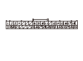
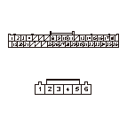
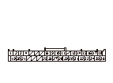
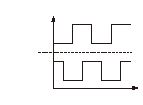

車いす固定装置DTC 32
DTC 32:
R.モータ センサ故障
故障診断を始める前に、必ずイグニッション スイッチをOFFにし、SCSカプラの接続を外すこと
再現テスト1
1-1
通常ベルトフリー操作
または
強制ベルトフリー操作
を行い、ウインチベルトを引出す
1-2
主電源スイッチをOFFにし、ONにしてから再度OFFにする
1-3
主電源スイッチをONにし、トランスミッタ スイッチをONにする
1-4
トランスミッタ スイッチを操作して、ウインチベルトの巻取りを行う
1-5
DTCを確認する
◆ DTC 32を表示するか
YES
-
ステップ
2
へ進む
NO
-
一過性故障、現在システムは正常
モータ センサのセンサ電源回路（RSVライン）の断線点検
2-1
ホイール チェア ドライブ コントロール ユニット カプラB（36P）のNo.14端子とボディ アース間の電圧を測定する
◆ バッテリ電圧か
YES
-
ステップ
3
へ進む
NO
-
コードの断線

モータ センサのセンサGND回路（RSGライン）の断線点検
3-1
主電源スイッチをOFFにする
3-2
ホイール チェア ドライブ コントロール ユニット カプラB（36P）およびR.ホイール チェア ドライブAssy.カプラB（6P）の接続を外す
3-3
ホイール チェア ドライブ コントロール ユニット カプラB（36P）のNo.10端子とR.ホイール チェア ドライブAssy.カプラB（6P）のNo.6端子間の導通を点検する
◆ 導通があるか
YES
-
ステップ
4
へ進む
NO
-
コードの断線

モータ センサのセンサ入力回路（RS1、RS2ライン）の断線点検
4-1
ホイール チェア ドライブ コントロール ユニット カプラB（36P）のNo.11、No.13端子とR.ホイール チェア ドライブAssy.カプラB（6P）のNo.4、No.5端子間の導通を点検する
◆ 導通があるか
YES
-
ステップ
5
へ進む
NO
-
コードの断線
モータ センサのセンサ入力回路（RS1、RS2ライン）の短絡点検
5-1
ホイール チェア ドライブ コントロール ユニット カプラB（36P）のNo.11、No.13端子とボディ アース間の導通を点検する
◆ 導通があるか
YES
-
コードの短絡
NO
-
ステップ
6
へ進む
モータ センサのセンサ入力回路（RS1、RS2ライン）の出力点検
6-1
すべてのカプラを接続する
6-2
通常ベルトフリー操作
または
強制ベルトフリー操作
を行い、ウインチベルトを引出す
6-3
主電源スイッチをOFFにし、ONにしてから再度OFFにする
6-4
主電源スイッチをONにし、トランスミッタ スイッチをONにする
6-5
トランスミッタ スイッチを操作して、ゆっくりとウインチベルトの巻取りを行う
6-6
ホイール チェア ドライブ コントロール ユニット カプラB（36P）のNo.11端、No.13端子とNo.10端子間の電圧を測定し、それぞれの電圧が交互に変化することを確認する
◆ 電圧が交互に変化するか
YES
-
ホイール チェア ドライブ コントロール ユニットを交換する
NO
-
R.ホイール チェア ドライブAssy.を交換する


 故障診断を始める前に、必ずイグニッション スイッチをOFFにし、SCSカプラの接続を外すこと
故障診断を始める前に、必ずイグニッション スイッチをOFFにし、SCSカプラの接続を外すこと
故障診断を始める前に、必ずイグニッション スイッチをOFFにし、SCSカプラの接続を外すこと
故障診断を始める前に、必ずイグニッション スイッチをOFFにし、SCSカプラの接続を外すこと